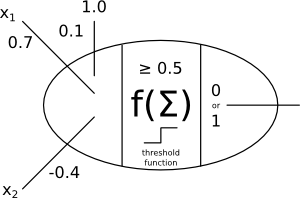
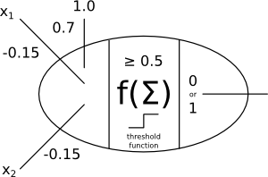

Final guide
You can bring a notecard (5in x 7in max) with notes or whatnot.
Multi-agent systems
What are two principles for designing agent-based simulations?
Here are seven:
- agents not functions (not functional decomposition)
- keep agents small in size
- keep agents small in time (forgetful)
- keep agents small in scope (local sensing and action)
- decentralizd system control
- support agent diversity
- provide an entropy leak
Prisoner’s dilemma
True or false? “Defecting” means confessing to the crime so that you get off the hook but your partner goes to jail.
True
Always cooperate
Always defect
Cooperate until the partner defects, and then defect forever after.
Tit-for-tat does the same action the partner did in the last time step; it just mirrors the partner. The first choice (if tit-for-tat goes first) is to cooperate.
Tit-for-tat
Jesus (always-cooperate) strategy
Learning
Describe the difference between “supervised” and “unsupervised” learning.
Supervised learning uses information about the truth when training. Unsupervised learning does not have the truth (ever) so obviously cannot use this information.
What does “10-fold cross validation” mean?
This happens 10 times, and the results are averaged: Take 90% of the input data and train the learning algorithm on it; test the learning algorithm on the remaining 10%. For each of the 10 iterations, separate the input data into a different 90/10 split.
k-means clustering
k-means clustering is an unsupervised or supervised learning strategy?
Unsupervised
The number of clusters.
The resulting clusters may be different. Initial clusters near outliers may result in small clusters around the outliers (which is usually a bad thing).
Note: also be able to perform k-means clustering on some data as in Homework 4.
k-nearest neighbor
What does k-nearest neighbor allow us to do with a new, unknown data point?
Determine its category (class, label, tag, etc.).
Supervised
The number of neighbors that get a “vote” during the classification stage.
What problem may a very small value of \(k\) cause?
Noise has too great an impact. The nearest neighbor will be chosen without considering the “larger” picture.
What problem may a very large value of \(k\) cause?
The more common category will be chosen more often than it should.
Is there one value for \(k\) that works best for nearly all data sets? If so, what is it?
There is not one best value; you need to experiment with different values to find the best for your dataset.
Give one benefit of k-nearest neighbor learning.
It is a very simple algorithm and can work quite well in some cases.
Give one drawback of k-nearest neighbor learning.
It is very slow because it checks every item in the database (unless KD-trees are used). It also requires one to retain all the training examples in the database.
Note: also be able to perform k-nearest neighbor classification on some data as in Homework 4.
Classification evaluation
Define true positive (TP). Define false positive (FP). Define false negative (FN). Define precision (in terms of TP and/or FP and/or FN). Define recall (in terms of TP and/or FP and/or FN). Define F-score (in terms of precision and/or recall).
- True positive (tp)
- chosen categories that are true categories.
- False positive (fp)
- chosen categories that are not true categories.
- False negatives (fn)
- true categories that are not chosen.
- Precision
- \(tp/(tp+fp)\).
- Recall
- \(tp/(tp+fn)\).
- F-score
- \(2 * precision * recall / (precision + recall)\).
Suppose we make our classification engine more cautious; that is, it is less likely overall to predict any category. Does precision go up or down or remain unchanged? Does recall go up or down or remain unchanged?
Precision goes up because there are fewer \(fp\). Recall goes down because there are more \(fn\).
What are the precision and recall for the following scenario:
- The true categories for some docs are:
- {noise, noise, signal, noise, signal}
- The predicted categories for the docs are (same ordering):
- {noise, signal, signal, signal, noise}
Consider “signal” to be a “positive” claim.
- tp = 1, fp = 2, fn = 1
- precision is 1/3
- recall is 1/2
Probability and Bayesian methods
Describe what \(P(a)\) means (in words).
The probability that some event \(a\) occurs.
Describe what \(P(a,b)\) means (in words).
The probability that two events \(A\) and \(B\) occur together.
Describe what \(P(a|b)\) means (in words).
The probability that some event \(a\) occurs given that we know or are assuming event \(b\) also occurs.
If events \(a\) and \(b\) are independent, and \(P(a) = 0.25\), \(P(b) = 0.10\), what is \(P(a,b)\)? What is \(P(b,a)\)?
In the toothache graph from the Bayesian inference notes (the graph with just c, g, and t), what is \(P(t|g)\)?
Write Bayes’ theorem.
Using algebra, derive Bayes’ theorem from the probability calculus equalities.
| Derived | Notes |
|---|---|
| \(P(a \wedge b) = P(b \wedge a)\) | Due to normal Boolean logic rules. |
| \(P(a \vert{} b) P(b) = P(b \vert{} a) P(a)\) | Due to rule regarding \(P(a \wedge b)\). |
| \(P(a \vert{} b) = \frac{P(b \vert{} a) P(a)}{P(b)}\) | Bayes’ formula. Of course, it must be that \(P(b) \neq 0\). |
Suppose I know (or believe) that \(P(b|a)=0.1, P(a)=0.9, P(b)=0.25\), what is \(P(a|b)\)?
In the toothache graph from the Bayesian inference notes (the graph with just c, g, and t), is \(P(g|t) > P(c|t)\)?
So \(P(c|t) > P(g|t)\).
What is the outcome of computing \(\arg\max X (P(x))\) where \(X\) is an event? (If \(\arg\max_x (P(x))\) was a function, what would the output of the function be?) Describe in English.
The outcome would be an event, not a probability.
Suppose I know (or believe) that \(P(b|a)=0.1, P(a)=0.9, P(b|c)=0.2, P(c)=0.8\), what is \(\arg\max_x (P(x|b))\)?
The answer is \(c\) because \(P(b|a)P(a) < P(b|c)P(c)\).
Naïve Bayesian classification
Describe a “binary document vector” for a text document.
Each unique word is a “dimension,” and the value for that dimension is 1 or 0. It is 1 if the word is present in the document, 0 otherwise.
Why do we use logarithms for the calculations?
“With a lot of unique words, we create very small values by multiplying many \(p_{ci}\) terms. On a computer, the values may become so small that they may ‘underflow’ (run out of bits required to represent the value). To prevent this, we just throw a logarithm around everything.”
Neural networks
What does “all or nothing” mean when we talk about neurons in the brain?
A neuron either fires (discharges) completely or does not fire.
Explain the Hebbian learning rule.
“Cells that fire together, wire together.” The rule says that connected neurons that both fire nearby (in time) from some stimulus, will strengthen their connection. Eventually, if just one or the other fires, it will induce the second to fire as well.
What is happening when an artificial neural network is “learning”?
The weights on the nodes’ inputs are updating.
Generate the input/output table for this perceptron:

| \(x_1\) | \(x_2\) | output |
|---|---|---|
| 0 | 0 | 0 |
| 0 | 1 | 0 |
| 1 | 0 | 1 |
| 1 | 1 | 0 |
Draw perceptron and define inputs for the NAND function.

Define the word “epoch.”
An epoch is a single pass (of weight updates) through every example in the training set.
Write the perceptron learning rule for a single weight. Define the variables you use.
where \(w'_{ji}\) is the new weight value, \(w_{ji}\) is the old weight value, \(\alpha\) is a “learning rate” parameter, \(y_j\) is the binary value spit out by this perceptron, \(d_j\) is the correct value, and \(x_i\) is the input on this weight.
Explain why the perceptron learning rule has \(d_j-y_j\) and not \(y_j-d_j\) (everything else being equal).
If \(d_j-y_j < 0\), then the predicted value is 1 but the true value is 0; so the predicted value is too high, thus we want to adjust the weights down so that there is less chance in the future that the weighted sum will surpass the threshold and produce another 1 output.
If \(d_j-y_j > 0\), then the predicted value is 0 but the true value is 1; and we get the opposite effect (adjust weights up so that threshold might be met in the future).
Give the “loss” function for logistic perceptrons and define the variables you use.
where \(d_j\) is the correct answer (1.0 or 0.0, binary), and \(p_j=f(s_j)\) is the probability from the logistic function. Define your variables.
Give the logistic perceptron learning rule, with activation function \(1/(1+e^{-s_j})\), where \(s_j\) is the weighted sum of a perceptron’s inputs.
where \(w'_{ji}\) is the new weight value, \(w_{ji}\) is the old weight value, \(\alpha\) is a “learning rate” parameter, \(d_j\) is the correct value, \(p_j\) is the predicted value (a probability), and \(x_i\) is the input on this weight.
True or false: a single-layer perceptron network can compute any function.
False: it can only compute linearly-separable functions, which does not include, e.g., XOR.
Describe some differences, in terms of processing power and technique, between a human brain and typical personal computer.
- The brain is highly parallel, but PC’s typically process on one or a small number of CPUs.
- Each neuron in the brain is slow (several ms per computation), while each transistor or processor in a PC is fast (<1 ns per computation).
- Information is stored in the brain in a highly distributed fashion; information in a PC is highly structured and linear or hierarchical (in files and folders).
- Brains are very robust to information loss and corruption (e.g., killing brain cells from boozing); yet just a couple of bit-flips in a PC can crash the system.
- Brains change their connectivity over time (“synaptic plasticity”); PCs never change unless we manually upgrade the hardware. Likewise, a brain is a mix of hardware and software, while the two are normally quite distinct in a PC.
Note: be able to apply the perceptron learning rule (with the threshold function) to a single perceptron with a small number of weights.
Computer vision
Note: be able to apply a linear convolution kernel to a 3x3 pixel gray-scale image.
Philosophy
Describe the Church-Turing thesis in a few sentences.
Any reasonable mechanical process that can be described or implemented can be programmed and realized in a computer (where “computer” means, e.g., a Turing machine). A “reasonable” process is a process that requires only finitely-many steps and finite time to follow through them; it must not require special (human-like) ingenuity, cleverness, or creativity to follow the steps; it must give the right answer every time.
This is just a thesis because it cannot be proven.
The “Chinese room” argument
What is the essential goal of “strong AI?”
Create a true “mind,” i.e., an intelligent thinking machine. It may even be conscious.
What is the most critical assumption in the Chinese room argument?
That the person in the room does not understand Chinese.
If you believe the Chinese room argument, can you also (reasonably) believe that passing the Turing test gives proof that a machine possesses a mind (i.e., can be said to truly understand things)?
No.
The “Norvig - Chomsky” debate
Give a 2-3 sentence summary of the debate.
Chomsky thinks statistical methods in AI don’t lead to any scientific kinds of insights about intelligence. Norvig says that we have good reason to believe intelligence is statistical in nature (at least for some things like hearing words), and besides, the statistical methods work.
Robot ethics
Give two ethical issues related to the “take your medicine robot.”
Some possible answers:
- Ensure it gives medicine to the right person
- Ensure it gives the right medicine
- Detect responses like “no,” no response, etc.
- Define an ethical strategy for responding to “no,” to no response, etc.
- Figure out if it matters whether or not the robot knows the person actually took the medicine
- Ensure reliability of operation
- Keep records private
- Develop a mechanism for updating the robot and changing its instructions.
- Define a “hand off of control” mechanism that’s possibly more complicated than a big red button.
Extra credit
What is bigger than ant?
These are bigger:
- anteater, foot, godzilla.
(Just kidding.)